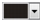

Быстрые ссылки на процедуры, описанные на этой странице:
• |
• |
Кроме того, можно установить горячую точку, которая соответствует абрису объекта или заполняет ограничивающий блок объекта. CorelDRAW применяет текстуру сетчатой штриховки к объекту, содержащему ссылку. Можно изменить цвет сетчатой штриховки, а также ее фоновую заливку. Кроме того, можно добавить альтернативный текст в объекты для средств просмотра, поддерживающих только текст, или программ для чтения экрана.
| Установка горячей точки |
1. |
Выберите Окно |
2. |
Нажмите кнопку Интернет .
|
3. |
Выберите параметр Ссылка в списке Поведение и введите веб-адрес в
поле URL-адрес.
|
4. |
В области Определить горячую точку с помощью нажмите одну из
следующих кнопок.
|
• |
Форма — определяет горячую точку с помощью формы объекта.
|
• |
Ограничение — определяет горячую точку с помощью
ограничивающего блока объекта.
|
5. |
Откройте меню выбора Штриховка и выберите цвет.
|
6. |
Откройте меню выбора цвета фона  и выберите цвет.
|
Если сначала выбрать объект с гиперссылкой, а затем изменить цвета
горячих точек сетчатой штриховки и фона, то изменения вступят в
силу только для выбранного объекта.
|
| Добавление альтернативного текста в объект |
1. |
Выберите Окно |
2. |
Нажмите кнопку Интернет .
|
3. |
Введите альтернативный текст в текстовом поле Комментарии ALT.
|
Copyright 2012 Corel Corporation. Все права защищены.